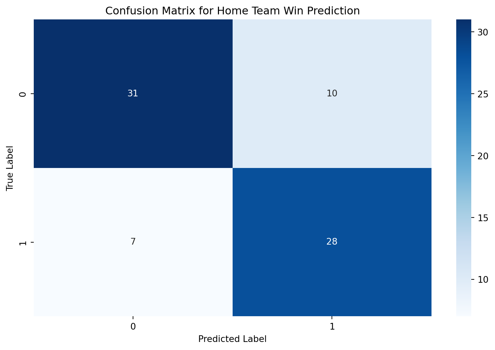
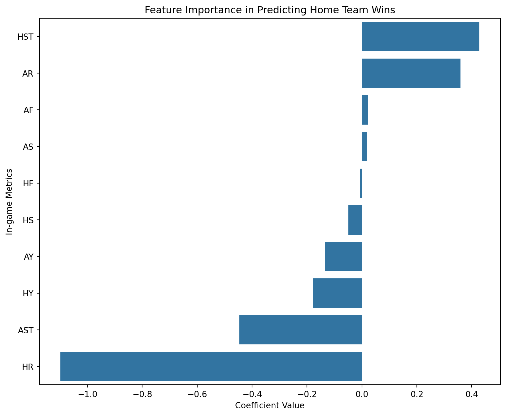
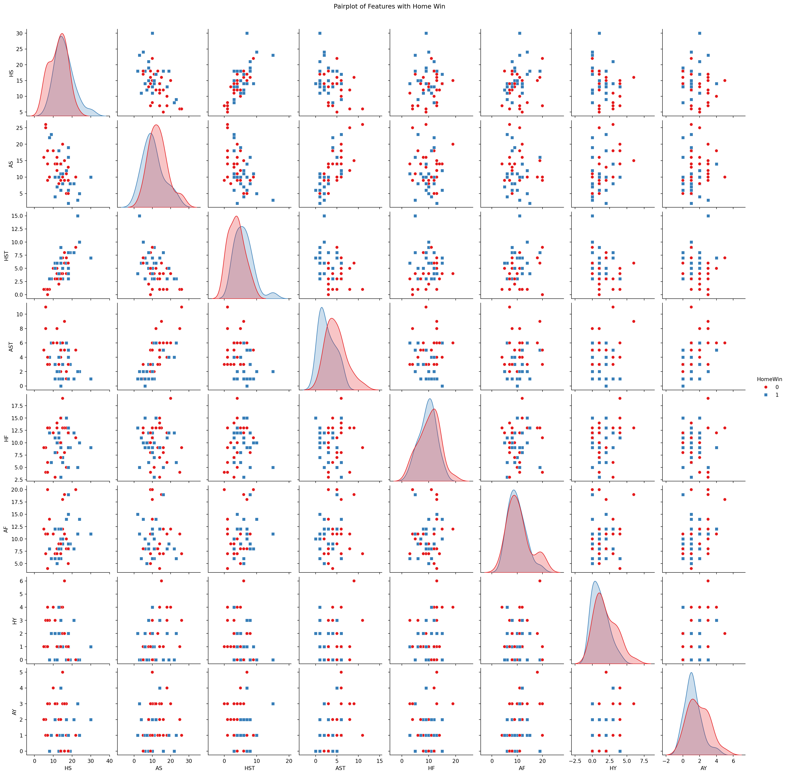
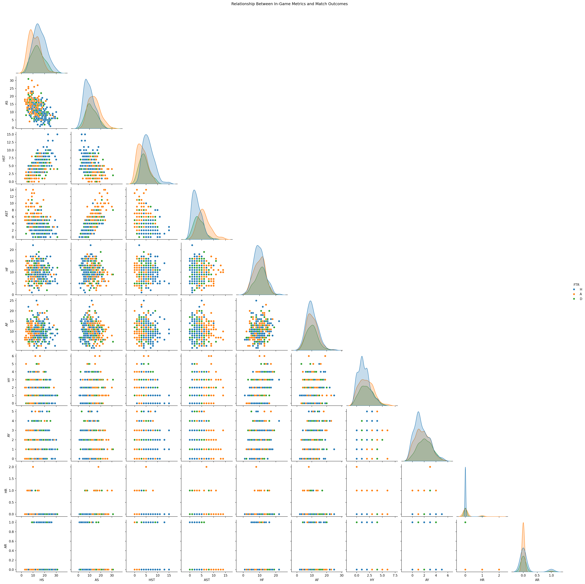
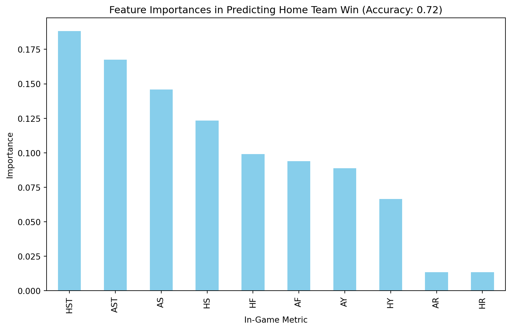

import pandas as pdimport matplotlib.pyplot as pltimport seaborn as snsfrom sklearn.model_selection import train_test_splitfrom sklearn.linear_model import LogisticRegressionfrom sklearn.metrics import confusion_matrix, accuracy_score# Load the datasetdf = pd.read_csv('data/soccer21-22.csv')# Data preprocessing# Creating a binary target variable 'Result' where 1 represents a home win ('H') and 0 otherwisedf['Result'] = (df['FTR'] =='H').astype(int)# Feature selectionfeatures = ['HS', 'AS', 'HST', 'AST', 'HF', 'AF', 'HY', 'AY', 'HR', 'AR']X = df[features]y = df['Result']# Splitting the dataset into training and testing setsX_train, X_test, y_train, y_test = train_test_split(X, y, test_size=0.2, random_state=42)# Logistic Regression modelmodel = LogisticRegression(max_iter=1000)model.fit(X_train, y_train)# Predictionsy_pred = model.predict(X_test)# Evaluating the modelaccuracy = accuracy_score(y_test, y_pred)cm = confusion_matrix(y_test, y_pred)# Plot 1: Feature importance visualizationcoefficients = pd.DataFrame(model.coef_[0], X.columns, columns=['Coefficient']).sort_values(by='Coefficient', ascending=False)plt.figure(figsize=(10, 6))sns.barplot(x=coefficients['Coefficient'], y=coefficients.index)plt.title('Feature Importance in Predicting Home Team Wins')plt.xlabel('Coefficient Value')plt.ylabel('In-game Metrics')# Plot 2: Confusion Matrixsns.heatmap(cm, annot=True, fmt='d', cmap='Blues')plt.title('Confusion Matrix for Home Team Win Prediction')plt.xlabel('Predicted Label')plt.ylabel('True Label')plt.show()# Print accuracyprint(f'Model Accuracy: {accuracy:.2f}')

Model Accuracy: 0.78
# Load required libraries# Load required librariesimport pandas as pdimport seaborn as snsimport matplotlib.pyplot as plt# Load the datasetdf = pd.read_csv('data/soccer21-22.csv')# Define the target variable - Home win (1) or not (0)df['HomeWin'] = df['FTR'].apply(lambda x: 1if x =='H'else0)# Select features of interestfeatures = ['HS', 'AS', 'HST', 'AST', 'HF', 'AF', 'HY', 'AY']# Compute correlation matrix for the featurescorr = df[features].corr()# Heatmap of correlation between featuresplt.figure(figsize=(8, 6))sns.heatmap(corr, annot=True, cmap='coolwarm', fmt=".2f")plt.title("Feature Correlation Heatmap")plt.show()# Pairplot for selected features with a limited number of data points for claritysns.pairplot(df.sample(50, random_state=42)[features + ['HomeWin']], hue='HomeWin', palette="Set1", diag_kind="kde", markers=["o", "s"])plt.suptitle("Pairplot of Features with Home Win", y=1.02)plt.show()


# Load Librariesimport pandas as pdimport seaborn as snsimport matplotlib.pyplot as pltfrom sklearn.model_selection import train_test_splitfrom sklearn.ensemble import RandomForestClassifierfrom sklearn.metrics import accuracy_score# Read in the datadf = pd.read_csv('data/soccer21-22.csv')# Prepare the dataset for visualization and modeling# Home team win (1) or not (0)df['HomeWin'] = df['FTR'].apply(lambda x: 1if x =='H'else0)# Subset of features for analysisfeatures = ['HS', 'AS', 'HST', 'AST', 'HF', 'AF', 'HY', 'AY', 'HR', 'AR']# Visualization 1: Relationship between in-game metrics and match outcomessns.pairplot(df, vars=features, hue='FTR', corner=True)plt.suptitle("Relationship Between In-Game Metrics and Match Outcomes", y=1.02)plt.show()# Visualization 2: Predictive Model Capability# Prepare data for modelingX = df[features]y = df['HomeWin']# Split the dataset into training and testing setsX_train, X_test, y_train, y_test = train_test_split(X, y, test_size=0.2, random_state=42)# Initialize and train the RandomForest Classifierclf = RandomForestClassifier(n_estimators=100, random_state=42)clf.fit(X_train, y_train)# Make predictionsy_pred = clf.predict(X_test)# Model accuracyaccuracy = accuracy_score(y_test, y_pred)# Feature importances visualizationfeature_importances = pd.Series(clf.feature_importances_, index=features).sort_values(ascending=False)plt.figure(figsize=(10, 6))feature_importances.plot(kind='bar', color='skyblue')plt.title(f"Feature Importances in Predicting Home Team Win (Accuracy: {accuracy:.2f})")plt.ylabel('Importance')plt.xlabel('In-Game Metric')plt.show()


Question 2:
Introduction
Approach
Data Preparation and Pre-processing ### Discussion